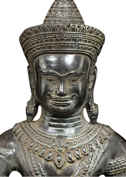

ជំពូកទី ១
១. ប្រវត្តិ និងការឡើងគ្រងរាជ្យ
ព្រះបាទសូរ្យវរ្ម័នទី២ បានឡើងគ្រងរាជ្យប្រហែលនៅឆ្នាំ ១១១៣ នៃគ្រិស្តសករាជ ក្នុងអំឡុងពេលដែលអាណាចក្រខ្មែរកំពុងប្រឈមមុខនឹងភាពចលាចលផ្នែកនយោបាយ និងការប្រកួតប្រជែងអំណាចក្នុងរាជវង្ស។ មុនពេលឡើងសោយរាជ្យ ព្រះអង្គបានដឹកនាំកងទ័ពធ្វើសង្គ្រាមដើម្បីបង្រួបបង្រួមអំណាច និងយកឈ្នះគូប្រជែងជាច្រើន ដោយបង្ហាញពីព្រះចេស្តាដ៏ក្លាហាន និងសមត្ថភាពដឹកនាំដ៏ខ្ពង់ខ្ពស់របស់ព្រះអង្គ។
បន្ទាប់ពីឡើងសោយរាជ្យ ព្រះបាទសូរ្យវរ្ម័នទី២ បានខិតខំស្តារស្ថិរភាពនយោបាយ និងបង្រួបបង្រួមទឹកដីឱ្យស្ថិតក្រោមអំណាចកណ្តាលរបស់អាណាចក្រខ្មែរ។ ព្រះអង្គបានរៀបចំប្រព័ន្ធគ្រប់គ្រងរដ្ឋ បង្កើនកម្លាំងយោធា និងពង្រឹងទំនាក់ទំនងការទូតជាមួយរដ្ឋជិតខាង ដែលបានធ្វើឱ្យអាណាចក្រមានសន្តិភាព និងភាពរឹងមាំឡើងវិញ។